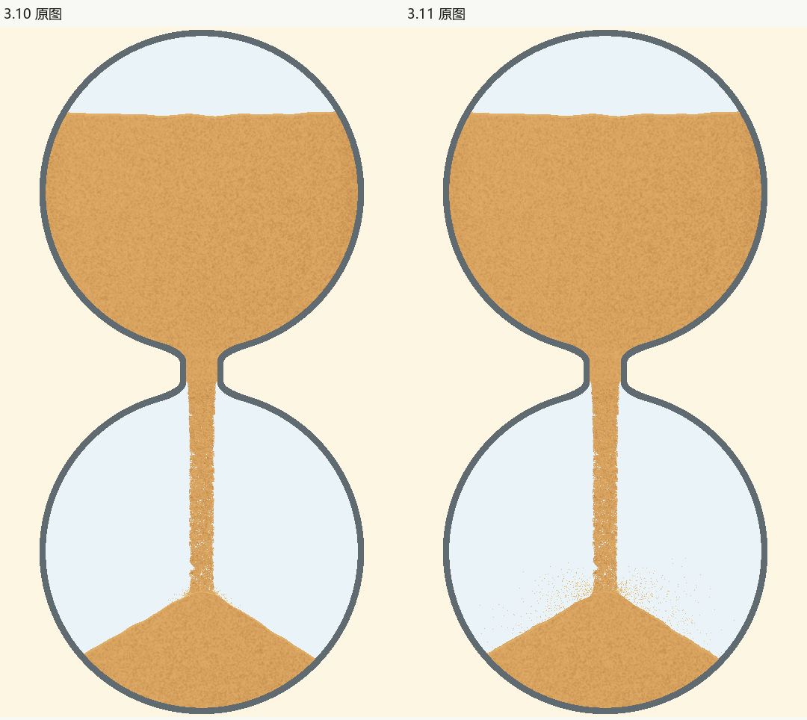

3.11：恢复3.3飞溅力度，消除柱堆亮圈
本轮依照计划及用户追加偏好，恢复3.3的空中飞溅力度，修复3.10交接亮圈。原有沙柱、颈宽、计时及100%沙量保持。当前放行状态见审核决定，具体源身份与数据见发布登记。
具体变化
真实3.3提交ff3b721的发射方法使用完整水平与垂直初速度；后续的0.55、0.35缩减系数已移除。发射数量、粒径、速度随机参数及空中浅金色保持原值。3.3同输入、同随机种子的实际发射对照通过，3.10缩减方法继续作为被拒的负例。现在颈宽和接触模型不同，不能据此声称整幅画面逐像素复刻3.3。

亮圈的主要来源是贴坡散粒统一使用sand_light，密集重叠后像一圈描边。现在只在下降贴近堆面及触地后，逐渐使用接近沙堆本色的固定颗粒明暗；空中上升和离堆较远的亮粒保持。位置、数量、尺寸和alpha均不由调色删除，不使用逐帧随机筛选。

实际动态
5秒原速实录 · 50秒原速实录，含暂停、恢复、末1%、余砂及落定。来自真正隐藏PC窗口与独立设置目录，无插帧。动态审核只声明实际查看的连续解码窗口及正常尺寸画面，不将图板称为完整原速播放。
5秒阶段与落定 · 50秒阶段与落定 · 六配色和粗细两端 · 1秒/5秒/50秒/最细颈。


两条绘制路径与保护检查
| 检查 | 证据及限制 |
|---|---|
| 普通与批量绘制 | 两路径共用RGBA8颜色。真实普通Rectangle与彩色batch各8张图，完整物理和几何相同，RGB逐像素零差；普通路径真实触发构建失败回退，非空粒子池与实际实例断言均过。独立比较记录。 |
| 缺角反例 | 首轮两路径有200余像素差异、最高通道差189，被拦下。确认是旧矩形三角索引漏角后，只修正彩色子类的私有索引；公共batch、颈部、marker代码保持。修前反例与差异图保留，没有放宽像素容差。 |
| 源码与物理保护 | main只允许3.3发射系数及着色方法变化；还原这些精确AST后全文件同3.10。沙柱原shader和函数、公共batch与相邻路径保持。55张阶段比较只允许飞溅自身数组/统计变化，主粒子、沙量、几何、双随机状态、其他效果和时钟仍保持。 |
| 接缝与状态 | 既有低55、高17、回退4、浓淡端点4，以及6组真实主粒子轨迹与局部下行像素检查。另有正常尺寸、1秒接触原像素、黑沙、5/50暂停恢复及收尾独立复审；物理与非空检查不能替代视觉。 |
| 能力及故障回退 | 新batch只额外传每粒一RGBA8纹素，静态Mesh不逐帧重传。两采样器能力和实际shader在包装前检查；画布/纹理失败保留普通有色绘制。PC专项验证不代表Android性能或设备验证。 |
同配置PC工作量原始样本及预算结果在发布登记和证据包中。计时包含更新、绘制及GPU完成等待，排除取图编码；不以一场前后测量声称稳定提速，也不据此声称实屏FPS。
复审与未查范围
对抗性审核及失败证据 · 独立源码审核 · 独立动态审核。5秒首次涨堆偏快的既有P2仍保留。Android、MuMu、音频、真实屏幕刷新、10小时全程及全部配色全程未登记通过。